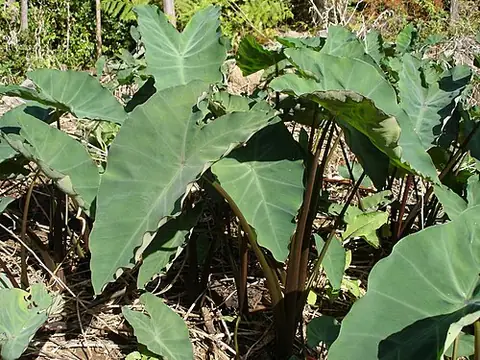

Wild taro corms
Wild taro corms is a root or shoot you can forage from October to February in South India, West coast and Deccan, East and Northeast. The underground corms of the same plant whose leaves make patra. Dug from wet ditches and paddy edges after the rains.

When is wild taro corms in season in India?
Wild taro corms is usually in season October to February. Timing shifts with weather, latitude and altitude.
Where does wild taro corms grow in India?
Wild taro corms grows in Andaman and Nicobar Islands, Andhra Pradesh, Arunachal Pradesh, Assam, Bihar, Dadra and Nagar Haveli and Daman and Diu, Goa, Gujarat, Jharkhand, Karnataka, Kerala, Lakshadweep, Maharashtra, Manipur, Meghalaya, Mizoram, Nagaland, Odisha, Puducherry, Sikkim, Tamil Nadu, Telangana, Tripura, West Bengal. Regions: South India, West coast and Deccan, East, Northeast.
How do you recognise wild taro corms?
The underground corms of the same plant whose leaves make patra. Dug from wet ditches and paddy edges after the rains.
How do you harvest wild taro corms?
Dig corms after the leaves yellow. Wear gloves. Replant the small side corms.
How do you eat wild taro corms?
Boiled, then roasted, fried or in curry.
How do you store wild taro corms?
Unwashed corms keep for weeks in a cool, dry place.
What can be confused with wild taro corms?
Giant taro (Alocasia) (Alocasia macrorrhizos), rated harmful raw. Colocasia's leaf stalk joins the leaf on its underside, near the centre. Alocasia's joins at the notch at the edge. Colocasia leaves droop and water beads off them. Alocasia leaves stand up stiffly and are glossy. Alocasia burns the mouth far worse and needs long cooking. Only eat it where locals cook that exact plant.
What is wild taro corms good for?
Calories.
What can you cook with wild taro corms?
- Arbi fry: Boiled taro corms pan-fried with ajwain, chilli and amchur.